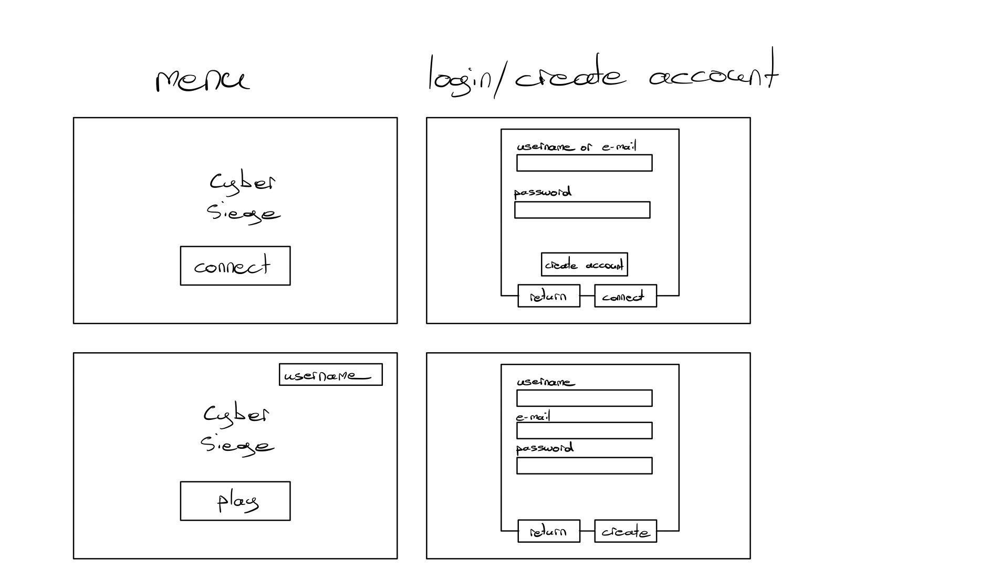
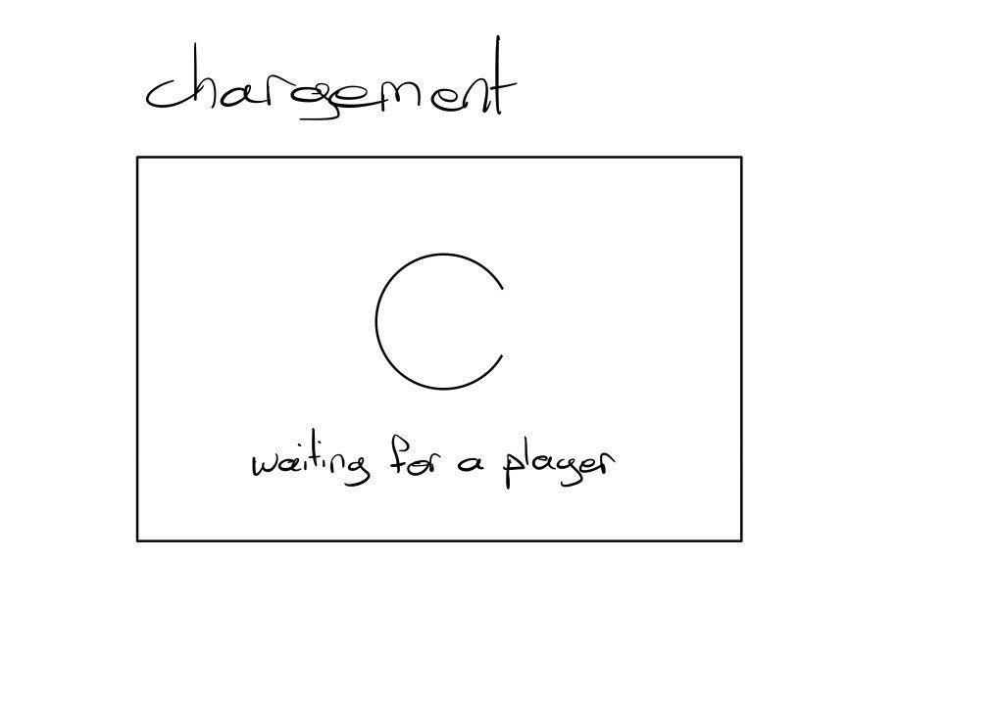
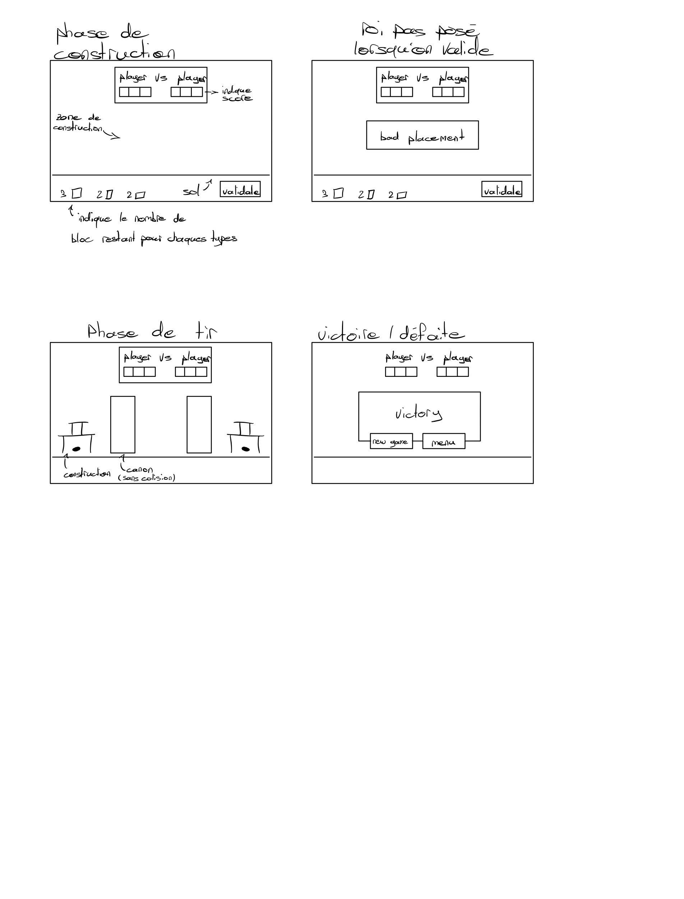
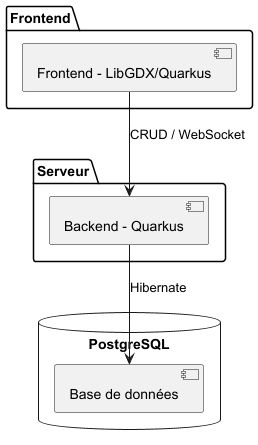

<!DOCTYPE html>
<html lang="en">
	<head>
		<meta charset="utf-8" />
		<meta
			name="viewport"
			content="width=device-width, initial-scale=1.0, maximum-scale=1.0, user-scalable=no"
		/>

		<title>reveal.js</title>

		<link rel="stylesheet" href="dist/reset.css" />
		<link rel="stylesheet" href="dist/reveal.css" />
		<link rel="stylesheet" href="dist/theme/black.css" />

		<!-- Theme used for syntax highlighted code -->
		<link rel="stylesheet" href="dist/plugin/highlight/monokai.css" />

		<style>
			:root {
				--r-main-font-size: 28px;
			}
			.columns {
				display: flex;
				align-items: center;
				gap: 2em;
				text-align: left;
			}
			.columns .col-text {
				flex: 1;
			}
			.columns .col-img {
				flex: 1;
				text-align: center;
			}
			.columns .col-img img {
				max-width: 100%;
				max-height: 60vh;
				border: none;
				box-shadow: none;
				background: none;
			}
			.columns.compact {
				font-size: 0.65em;
			}
			.columns.compact li {
				margin-bottom: 0.3em;
			}
			.full-slide-img {
				width: 100%;
				height: 100%;
				object-fit: contain; /* ou "cover" */
			}

			/* variante colonnes inégales : ajouter class="wide" ou "narrow" */
			.columns .col-text.wide, .columns .col-img.wide { flex: 1.5; }
			.columns .col-text.narrow, .columns .col-img.narrow { flex: 0.7; }
		</style>
	</head>
	<body>

	<div class="reveal">
		<div class="slides">
			<section data-markdown data-separator="^\r?\n---\r?\n$" data-separator-vertical="^\r?\n--\r?\n$" data-separator-notes="^Note:">
				<script type="text/template">
					# Projet de groupe — HEIG-VD
					## CYBERSIEGE

					---

					<!-- .slide: data-background-color="#1a1a2e" -->
					# Contexte & Problématique

					--

					## Contexte

					Projet réalisé dans le cadre de l'unité **Projet de groupe (PDG)** à la HEIG-VD.

					- Réalisation en équipe d'une application de taille importante
					- Mise en pratique des compétences acquises durant la formation
					- Acquisition autonome de connaissances sur des sujets nouveaux

					--

					## Le problème

					Les jeux de destruction de structures (type Angry Birds) demandent au joueur de :

					- lancer des projectiles sur une construction adverse
					- choisir où tirer et exploiter la physique du jeu

					**Mais** :

					- niveaux **prédéfinis**
					- jeu **solo**

					Pas de possibilité de développer ses propres stratégies
					et de les confronter à celles d'autres joueurs.

					---

					<!-- .slide: data-background-color="#16213e" -->
					# La solution

					--

					## Principe du jeu

					Jeu multijoueur en ligne **1 vs 1**, inspiré d'Angry Birds.

					- Partie composée de plusieurs **manches**
					- Le premier joueur à remporter la majorité des manches gagne
					- Chaque manche = 2 phases

					--

					## Phase 1 — Construction

					- Obtention aléatoire d'un certain nombre de blocs
					- Placement des blocs et du roi dans la zone constructible (drag & drop)
					- Bouton pour tester l'intégrité de la structure
					- Bouton pour valider la structure
					- Validation finale de la construction côté **serveur**
					- Passage à la bataille quand les deux structures sont validées
					(ou après un délai maximum)

					--

					## Phase 2 — Bataille

					- Chaque joueur catapulte des robots (différents types) vers la base adverse
					- Les robots sont ralentis/rebondissent selon le type de bloc touché
					- Dégâts proportionnels au type et à la vitesse d'impact
					- Un bloc sans vie restante est détruit, sinon simplement poussé
					- Un robot disparaît sous un certain seuil de vitesse
					- Délai entre deux tirs, dépendant du type de robot
					- Le serveur valide chaque tir et fait autorité sur l'état du jeu
					- **Victoire** : premier joueur à détruire le roi adverse

					--

					## Fin de partie

					- Écran de victoire/défaite pour chaque joueur
					- Options : relancer une partie ou retourner au menu
					- En cas de déconnexion, le joueur restant gagne

					--

					## Compte & matchmaking

					- Gestion de compte : email, username, mot de passe
					- Matchmaking : file d'attente pour trouver un adversaire 1v1

					--

					## Exigences non-fonctionnelles clés

					| Exigence | Cible |
					|---|---|
					| Joueurs simultanés | 32 |
					| Rollback visibles / manche | ≤ 2 |
					| Latence requêtes (p95) | < 200 ms |
					| Fréquence d'images | ≥ 30 FPS |
					| Temps de chargement | < 5 s |
					| Mots de passe | hashés (standard industrie) |
					| Sécurité | protection injections SQL, HTTP → HTTPS |
					| Résilience serveur | redémarrage auto en cas de crash |

					---

					<!-- .slide: data-background-color="#0f3460" -->
					# Processus de travail

					--

					## Méthodologie

					- Approche **agile**
					- Sprints de **3 jours**
					- Backlog de features issues des user stories / personas
					- Sélection des tâches par priorité en début de sprint
					- Répartition des tâches entre les membres

					--

					## Suivi & organisation

					- Tableau **Kanban** (Backlog, Ready, In progress, In review, Done)
					- Suivi via les **issues** et **pull requests** GitHub
					- Réunion de fin de sprint : bilan, blocages, suite

					--

					## Gestion du code source

					- **Git Flow** : branche `dev` (intégration continue) / branche `main` (versions validées)
					- Une branche dédiée par fonctionnalité ou correction
					- Intégration uniquement via **Pull Request** + revue par un pair
					- Aucune modification directe sur `dev` / `main`
					- Objectif : au moins **1 commit par jour** et par membre

					---

					<!-- .slide: data-background-color="#1a1a2e" -->
					# Mockup & Landing page

					--

					## Mockup

					

					--

					

					--

					

					--

					## Landing page

					[Landing page](https://pdg-cybersiege.github.io/CYBERSIEGE/)

					---

					<!-- .slide: data-background-color="#0f3460" -->
					# Pipeline DevOps

					--

					## Vue d'ensemble

					<div class="columns compact">
						<div class="col-text">
							<ul>
								<li><strong>Frontend</strong> : rendu et exécution du jeu côté client</li>
								<li><strong>Backend</strong> : source unique de vérité, persistance, authentification</li>
								<li><strong>Base de données relationnelle</strong> : comptes utilisateurs, données de jeu</li>
								<li><strong>ORM</strong> : résolution de l'impedance mismatch</li>
								<li><strong>CI/CD</strong> : automatisation tests &amp; déploiement</li>
							</ul>
						</div>
						<div class="col-img">
							
						</div>
					</div>

					--

					## Stack technique (Java)

					| Composant | Choix | Raison |
					|---|---|---|
					| Frontend / rendu jeu | **LibGDX** | game engine complet, gameplay loop + physique, communauté large, Java |
					| Backend | **Quarkus** | expérience préalable, répond aux besoins |
					| Base de données | **PostgreSQL** | maîtrisé par l'équipe |
					| ORM | **Hibernate** | déjà utilisé, évite impedance mismatch |
					| Versioning | **GitHub** | simplicité |
					| Pipeline CI/CD | **Github actions** | expérience au préalable |
					| Tests | **JUnit** | tests de la logique applicative |
					| Coverage | **Jacoco** | qualité / couverture du code |
					| Conteneurisation | **Docker / Docker Compose** | environnement reproductible |

					--

					## Communication client-serveur

					- Requêtes **HTTP** pour les opérations CRUD
					- **WebSocket** pour le temps réel (phase de bataille, synchronisation)
					- Le serveur reste l'unique source de vérité et renvoie l'état
					de ses calculs pour corriger le client si nécessaire

					--

					## Étapes du pipeline (proposition)

					1. Push / Pull Request sur `dev` ou `main`
					2. Build du backend (Quarkus) et du frontend (LibGDX) a l'aide de gradle
					3. vérification formatage/documentation
					3. Exécution des tests unitaires (JUnit)
					4. Analyse de couverture (Jacoco)
					5. Build des images Docker et enregistrement sur le repository

					--

					## Démonstration

					---

					# Merci !

					Questions ?

				</script>
			</section>
		</div>
	</div>

		<script src="dist/reveal.js"></script>
		<script src="dist/plugin/notes.js"></script>
		<script src="dist/plugin/markdown.js"></script>
		<script src="dist/plugin/highlight.js"></script>
		<script>
			// More info about initialization & config:
			// - https://revealjs.com/initialization/
			// - https://revealjs.com/config/
			Reveal.initialize({
				hash: true,

				// Learn about plugins: https://revealjs.com/plugins/
				plugins: [RevealMarkdown, RevealHighlight, RevealNotes],
			});
		</script>
	</body>
</html>